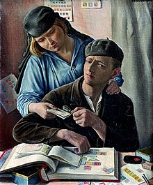

Коллекционирование марок
это коллекционирование почтовых марок и связанных с ними предметов. Это область филателии, которая занимается изучением или изучением и коллекционированием марок. Это было одно из самых популярных увлечений в мире с конца девятнадцатого века, когда быстро развивалась почтовая служба[1], поскольку страны, стремившиеся рекламировать свою самобытность с помощью своих марок, выпускали нескончаемый поток новых марок.
Сбор
Коллекционирование марок принято считать одной из областей, составляющих более широкий предмет филателии-изучение марок. Филателист может, но не обязан собирать марки. Нередко термин "филателист" используется для обозначения коллекционера марок. Многие случайные коллекционеры марок накапливают марки для чистого удовольствия и расслабления, не беспокоясь о мельчайших деталях. Однако создание большой или всеобъемлющей коллекции, как правило, требует определенных филателистических знаний и обычно содержит области филателистических исследований. Почтовые марки часто собирают из-за их исторической ценности и географических аспектов, а также из-за множества изображенных на них предметов, начиная от кораблей, лошадей и птиц и заканчивая королями, королевами и президентами.[2] Продажа почтовых марок является важным источником дохода для некоторых стран, выпуск марок которых может превышать их почтовые потребности, но дизайн которых привлекает многих коллекционеров марок.
